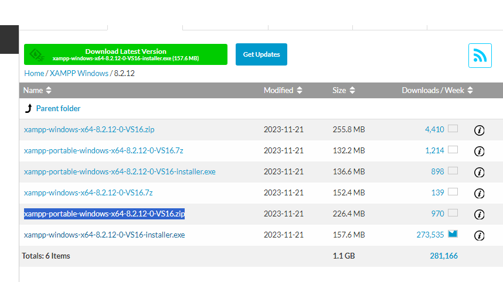

Instalación del XAMPP y creación de la base de datos
Instalación del XAMPP y creación de la base de datos
Para instalar una aplicación web en un equipo local, es necesario instalar un servidor web local con soporte para PHP y MySQL. Uno de los servidores web locales más utilizados es XAMPP, que permite instalar un servidor web con soporte para PHP y MySQL en un equipo local.
Comprobar los requisitos en la web de la aplicación web que vayamos a instalar (NextCloud, Moodle, Wordpress). Hay que recordar que además del software hay otros requisitos que hay que comprobar antes de empezar con la instalación; por ejemplo, el espacio de disco duro o la memoria necesaria. Por ejemplo, en la instalación de Xampp nos puede ocurrir que la versión de la BBDD no cumple los requisitos y debemos actualizarla. Puede ser necesario también cambiar parámetros de configuración del servidor web Apache para que funcione correctamente. Normalmente en el fichero php.ini se pueden cambiar estos parámetros.
Instalación de XAMPP
Al acceder a la URL de descarga de Xampp pulsaremos sobre descargar otras versiones para acceder a la versión portable y poder instalarla en un pendrive o disco duro externo.
Pulsaremos More Downloads
Pulsamos sobre las versiones de nuestro sistema operativo, en nuestro caso Windows.
Seleccionaremos la versión más reciente.
Y descargaremos la versión portable. Esta versión nos permite instalar Xampp en un disco extraible, e incluso llevarlo en un pendrive para poder ejecutarlo en cualquier equipo.

Una vez descargado el archivo, lo copiamos donde queramos instalarlo y ejecutamos y seguimos los pasos del asistente de instalación.
Asegúrate de instalarlo en la unidad que deseas, C o en el Usb o disco externo.
Una vez instalado podemos probar a arrancar el servidor Apache y MySQL y comprobar que todo funciona correctamente. Para ello, abrimos un navegador web y accedemos a la URL http://localhost. Si todo funciona correctamente, deberíamos ver la página de inicio de XAMPP.
Cuando cerramos Xampp, por defecto, se queda en segundo plano. Para cerrarlo completamente, debemos hacer clic en el botón "Salir" de la ventana de control de Xampp.
Podemos comprobar si está en segundo plano viendo la barra de tareas de Windows.
E incluso mostrarlo o cerrarlo desde la barra de tareas.

Una vez instalado XAMPP, puede ser necesario cambiar algunos parámetros de configuración del servidor web Apache para que funcione correctamente. Por ejemplo, en la instalación de Moodle, es necesario cambiar el tiempo máximo de ejecución de un script de PHP para que la instalación se realice correctamente. Para cambiar los parámetros de configuración del servidor web Apache, es necesario acceder al fichero de configuración php.ini y cambiar los parámetros necesarios.
Cambiar parámetros en el fichero php.ini
Desde este fichero podemos cambiar parámetros como:
post_max_size = 500M
upload_max_filesize = 500M
max_input_vars = 10000
O descomentar las siguientes líneas para activar las extensiones necesarias:
extension=gd
extension=gmp
extension=intl
extension=imap
extension=soap
extension=sodium
extension=tidy
extension=zip
O copiar el archivo xampp/php/libsodium.dll a xampp/apache/bin/libsodium.dll
Importante
Si cambiamos algún parámetro en el fichero php.ini, es necesario reiniciar el servidor web Apache para que los cambios surtan efecto. Para reiniciar el servidor web Apache, es necesario acceder a la interfaz de administración de XAMPP (xampp-control.exe) y hacer clic en el botón "Reiniciar" o Start y Stop del servidor web Apache.
Para poder instalar sin problemas un CMS, debemos ajustar el tiempo máximo de ejecución de un script de php. Se debe configurar el valor por defecto de la variable max_execution_time en php.ini. Por defecto su valor es de 30 segundos, pero recomendamos indicar 150.
Actualizar a MariaBD a la última versión
En ocasiones, la versión de MariaDB que viene con XAMPP no es la última y puede ser necesario actualizarla para poder instalar una aplicación web que requiera una versión más reciente de MariaDB. Para actualizar la versión de MariaDB en XAMPP, es necesario seguir los siguientes pasos:
-
Descarga la última versión de MariaDB en formato zip.
)
-
Renombra la carpeta de xampp/mysql a xampp/mysql-old.
-
Descomprime el archivo zip descargado de mariadb, y copia el contenido en una nueva carpeta en xampp/mysql
- Copia xampp/mysql_old/bin/my.ini a xampp/mysql/bin/my.ini
- Copia carpeta xampp/mysql_old/backup a xampp/mysql/backup
- Copia SOLO las carpetas (no archivos) de xampp/mysql_old/backup a xampp/mysql/data
Probamos a arrancar Xampp y comprobamos que todo funciona correctamente. Arrancamos Apache y MySQL y comprobamos que no hay errores.
Creación de la base de datos
Una vez instalado XAMPP, y actualizada la versión de MariaDB (en caso de ser necesario para Moodle, por ejemplo), es necesario crear una base de datos en MySQL para almacenar los contenidos del gestor de contenidos. Para crear una base de datos en MySQL, es necesario acceder a la interfaz de administración de MySQL y crear una nueva base de datos con un nombre y una contraseña.
Para ello accedemos a la interfaz de administración de MySQL a través de un navegador web, introduciendo la URL http://localhost/phpmyadmin en la barra de direcciones del navegador. O desde la página de inicio de Xampp, accediendo desde localhost.
Una vez en la interfaz de administración de MySQL, hacemos clic en la pestaña "Base de datos" y creamos una nueva base de datos.

Crearemos un usuario en la base de datos con todos los privilegios sobre la base de datos creada.
Para ello, podemos hacerlo accediendo a la pestaña "Cuentas de Usuarios" y creamos un nuevo usuario con un nombre y una contraseña. A continuación, asignamos todos los privilegios al usuario sobre la base de datos creada.
También podemos crear el usuario desde SQL, ejecutando el siguiente comando, cambiando los valores de miusuario y mipassword por los que queramos:

CREATE USER 'miusuario'@'localhost' IDENTIFIED BY 'mipassword';
GRANT ALL PRIVILEGES ON *.* TO 'miusuario'@'localhost';
Al pulsar continuar, se creará el usuario con todos los privilegios y nos debe aparecer un mensaje indicando que se ha ejecutado correctamente.
Creación de usuario y base de datos
Creamos una usuario alumnado con contraseña alumnado con todos los privilegios. Desde la pestaña "Base de datos" creamos una nueva base de datos con el nombre que queramos, por ejemplo bd_primerwordpress
Para gestionar las bases de datos también se puede utilizar MySQL Workbench, una herramienta gráfica muy utilizada en la administración de bases de datos. Podéis encontrar más información en la página oficial de MySQL Workbench.
Creación de un proyecto en XAMPP
En la carpeta C:\xampp\htdocs, creamos una carpeta con el nombre del proyecto, por ejemplo, primerwordpress. Podemos tener tantas carpetas como proyectos queramos tener en nuestro servidor local.